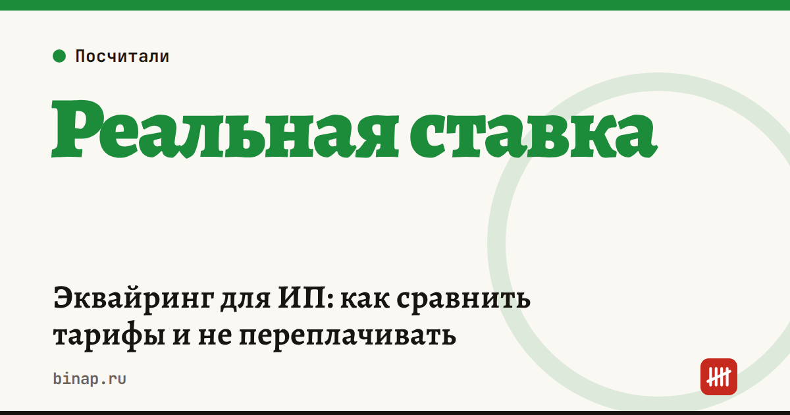

Эквайринг для ИП: как сравнить тарифы и не переплачивать

Сравнивать эквайринг по проценту в рекламе бесполезно: реальная ставка — это все платежи банку за приём карт за месяц, делённые на оборот по картам. Посчитайте её по своей выписке и попросите 3 банка рассчитать вам ту же сумму на ваших оборотах.
Коротко
- Реальная ставка = (комиссия + аренда терминала + абонентская плата + прочие платежи за приём карт) ÷ оборот по картам × 100%.
- С 1 января 2026 года услуги эквайринга облагаются НДС по ставке 22% — закон № 425-ФЗ отменил льготу. Сравнивайте тарифы с НДС.
- На УСН «доходы» налог платится с полной суммы покупки, а не с того, что пришло на счёт после комиссии.
- На УСН «доходы минус расходы» комиссию банка можно учесть в расходах.
- Торговый, интернет- и мобильный эквайринг и оплата по QR через СБП тарифицируются по-разному — сравнивайте тот вид, который вам нужен.
Сроки, изменения и разборы для ИП и самозанятых — каждое утро в Telegram и MAX. Подпишитесь, чтобы не пропустить.
Шаг 1. Посчитайте свою реальную ставку
Возьмите выписку за прошлый месяц и выпишите все платежи, связанные с приёмом карт:
- Комиссия за операции (часто банк удерживает её сразу и зачисляет на счёт уже за вычетом — смотрите реестр операций или отчёт по эквайрингу).
- Аренда или рассрочка за терминал.
- Абонентская плата за эквайринг или пакет, в который он входит.
- Плата за невыполнение оборота — если в договоре есть минимальный оборот.
- НДС, если банк выделяет его отдельной строкой.
Пример (расчёт редакции): оборот по картам 600 000 ₽ в месяц, комиссия 1,8% — 10 800 ₽, аренда терминала 1 500 ₽. Реальная ставка: (10 800 + 1 500) ÷ 600 000 × 100% = 2,05%. Не 1,8%, как в договоре.
Шаг 2. Найдите платежи вне процента
| Что проверить в договоре | Почему важно |
|---|---|
| Минимальный оборот и плата за его невыполнение | в слабый месяц ставка резко растёт |
| Аренда терминала или выкуп | при малом обороте аренда дороже самой комиссии |
| Срок зачисления денег | 1–2 рабочих дня или день в день — это деньги в обороте |
| Ставка зависит от оборота или категории товара | у части банков ставка ступенчатая |
| Входит ли эквайринг в пакет РКО | дешёвый эквайринг иногда требует дорогой тариф счёта |
| Плата за возвраты и чарджбэки | для интернет-магазина это отдельная статья расходов |
| Срок и условия расторжения | возврат терминала, неустойка |
Шаг 3. Сравните 3 предложения по одной формуле
Отправьте в 3 банка одинаковый запрос: ваш оборот по картам в месяц, средний чек, число операций, вид эквайринга, нужен ли свой терминал. Попросите ответ одной суммой в месяц с НДС, включая все платежи из таблицы выше.
Сравнивайте итог за месяц, а не процент. Если эквайринг идёт в пакете с расчётным счётом — складывайте стоимость счёта и эквайринга. Как разобрать комиссии счёта — в статье почему подорожал расчётный счёт.
Сколько стоит разница (расчёт редакции): при обороте 600 000 ₽ в месяц разница в реальной ставке 0,5 п. п. — это 3 000 ₽ в месяц или 36 000 ₽ в год.
Как эквайринг влияет на налог
УСН «доходы». Доход — полная сумма, которую заплатил покупатель, даже если банк зачислил деньги за вычетом комиссии. Так считает Минфин (письмо от 19.09.2016 № 03-11-11/54526, по данным Бух.ру). Частая ошибка — записать в КУДиР сумму из выписки: налоговая база занижается. Сколько платит ИП на 6% — в разборе налоги и взносы ИП на УСН 6%.
УСН «доходы минус расходы». Доход — тоже полная сумма, а комиссия банка идёт в расходы как оплата услуг банка.
Если вы плательщик НДС. НДС с комиссии банк выставляет в счёте-фактуре. Нужен ли бухгалтер, когда появился НДС, — в статье нужен ли бухгалтер ИП на УСН.
Частые вопросы
Что дешевле — эквайринг или оплата по QR через СБП? Зависит от категории товара и тарифа банка. Попросите банк посчитать оба варианта на вашем обороте и сравните реальную ставку по той же формуле.
Можно ли договориться о снижении ставки? Да, если у вас стабильный оборот: покажите банку оборот за 3–6 месяцев и предложения конкурентов.
Нужно ли менять кассу при смене банка эквайринга? Касса и терминал эквайринга — разные устройства. Уточните у нового банка, работает ли его терминал с вашей кассой, или есть ли решение «касса + терминал».
- КонсультантПлюс: Налоговый кодекс, часть вторая (ст. 149 — освобождение от НДС, ст. 346.15–346.16 — доходы и расходы на УСН)
- ppt.ru: с 2026 года отменены льготы по НДС на операции с банковскими картами (закон № 425-ФЗ)
- Бух.ру: особенности учёта эквайринговых операций при УСН (письмо Минфина от 19.09.2016 № 03-11-11/54526)